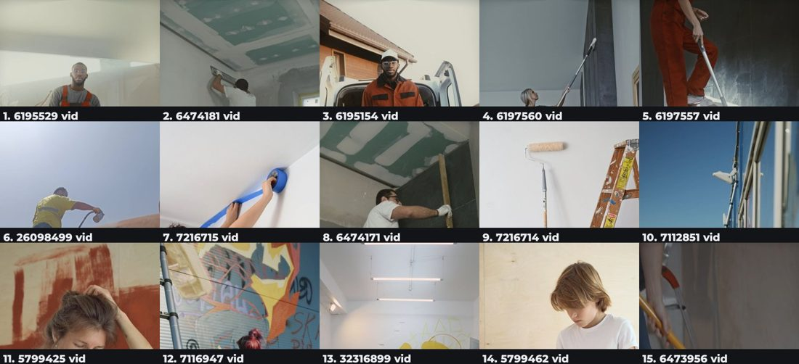
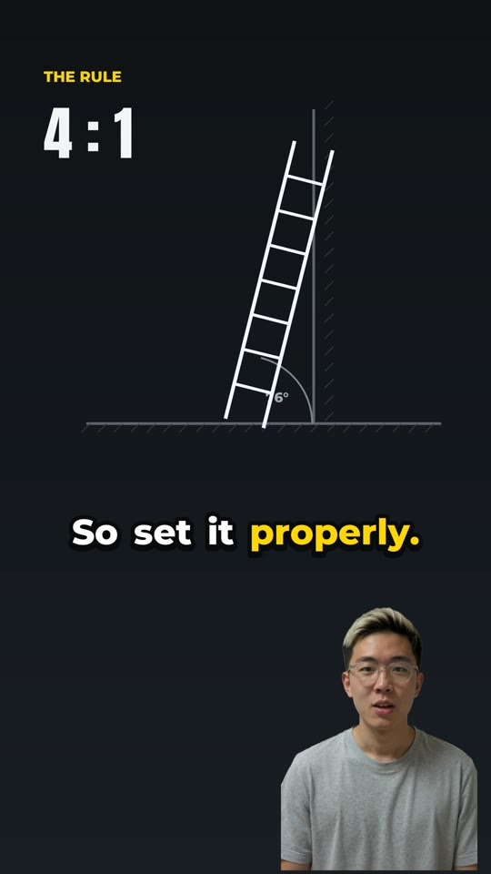
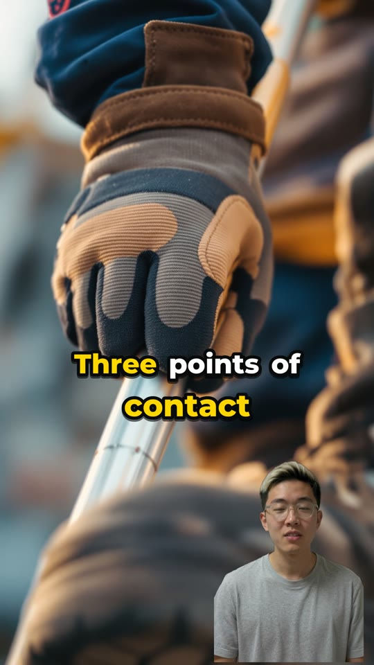

Claude Code skill · HeyGen · fal.ai · ffmpeg
Thirty to sixty seconds, vertical, with a lip-synced presenter, word-by-word captions and b-roll that actually matches what is being said. One command, one approval, no editing.
Part 1
What it produces
Someone typed ladder safety and approved a script. Everything else — the writing, the voice, the presenter, the footage, the cuts, the captions, the music — was assembled without anyone touching a timeline.
Composition
A lip-synced presenter sitting in the shot rather than in a box beside it. Pick anyone from the library, or use your own.
Word by word, in step with the voice, with the words that matter picked out — the format short-form audiences already read without sound.
Every shot earns its place against what is being said at that moment. Nothing generic, nothing filler, and never a random clip.
Some ideas have no stock clip — a ratio, an angle, a rule. Those get drawn and animated instead of approximated.
A bed matched to the subject that lifts the energy between sentences without ever competing with the narrator.
Full frame for the opening line, then down into the corner so the footage can do the work, and back up when the payoff lands.
Range
The same pipeline, unchanged, across three subjects that have nothing in common. Nothing about it is specialised to a domain.
| Topic | Runtime | Pace | What was different |
|---|---|---|---|
| Ladder safety | 32.4s | 178 wpm | A rule about an angle, so the diagram was drawn rather than filmed |
| Lifting safety | 40.3s | 164 wpm | A disputed claim surfaced for a human before anything was spent |
| Supra vs GT-R | 37.5s | 170 wpm | No authority publishes on it, so its claims stayed marked unverified |
Part 2
The keystone
The speech API returns word-level timestamps. Captions, b-roll cuts and the presenter's mouth all derive from that single source.
Nothing is aligned after the fact, so nothing can drift apart. The alternative — transcribing the audio back and matching it up — is where lip-sync and caption timing normally go wrong.
The contract
The model writes a storyboard. Every deterministic stage below it consumes that one file — which is what keeps the pipeline legible, and what makes a half-finished run resumable instead of disposable.
The storyboard plus the run directory is the entire state.
// storyboard.json { "topic": "ladder safety", "beats": [{ "narration": "So set it properly. One foot out for every four up.", "visual": { "intent": "the 4:1 angle rule", "prompt": "…" }, "emphasis": ["One", "four"], "overlay": { "kind": "ladder-angle" } }], "claims": [ /* see later */ ] }
The pipeline
Interaction
Once for the angle. Once for the script. Between those and the finished video it works silently.
If a choice is worth your input, it asks before deciding. If it isn't, it just decides. Reporting a decision already made gives you nothing to act on.
Money before it is spent. Failures, including its own. And any factual claim the script leans on that nothing has checked.
Earlier versions narrated every stage — which hook won, words per minute, what the stock libraries lacked. None of it was actionable.
Quality · footage
Not against the shot description — because we wrote that too. A beat whose line was “you don't have to be high up to die falling off a ladder” carried the intent “a worker on a low stepladder”, and the finished video contained no danger at all. Every check passed. Everything was consistent with the intent.
So candidates are scored against the words actually spoken over them, and anything that cannot clear the bar walks a fallback ladder ending in a designed card. Off-topic stock can never ship.

Quality · truth
Every mechanical check is about mechanics — duration, sync, black frames. Nothing looked at whether the script was true, and a wrong number in a safety video is worse than a dull one.
So every assertion is recorded with its provenance, and a beat that asserts something the ledger never mentions is a blocker. It verifies nothing. It makes the assertion visible at the gate, while changing it is still free.
// the ledger { "text": "one foot out for every four feet up", "status": "established", "source": "29 CFR 1926.1053 (b)(5)(i)" } established · contested estimate · unverified illustrative
Quality · staleness
Every expensive stage skipped its work if the output file was already there. Right for a retry. Wrong for iterating in place — which is how the tool is actually used.
A re-narrated script kept the previous presenter, lip-syncing to words that no longer existed. The same re-narration kept the old caption layer — 25.2s of captions over 39.1s of audio.
Both rendered cleanly and both passed grading. Every artifact now records a fingerprint of what it was built from and rebuilds when that changes.
Grading blocks if any timed layer disagrees with the narration. They are cut from the same timestamps, so one differing means a different script built it.
Quality · the render
Grading samples frames and measures what is measurable: duration, resolution, dead air, repeated footage, black frames, captions colliding with the presenter, layers out of sync.
Then it says so plainly — the mechanical pass cannot tell you whether it is engaging — and hands the frames back for a human to score against the rubric. The last call is never the tool's.

Built for the loop
| Ending | Hold after last word | Audio in final 0.4s |
|---|---|---|
| Before | 0.21 – 0.32s | −20.7 dB · cut dead |
| After | 0.91 – 1.00s | −41 to −51 dB · resolved |
The last frame is held and the music bed fades across it, so the closing line lands and the hook has a beat before it comes round again.
What it deliberately does not do is chase a seamless loop. A human voice restarting mid-thought is always audible, and hiding the seam means giving up the payoff.
Part 3
The next unlock
Today you type two words and it writes from what the model already knows. The interesting version reads your content and makes the video from that.
Point it at an SOP library, a set of incident reports, a product catalogue, the training modules nobody finishes. The storyboard is already a contract with a slot for provenance — filling it from real source material is the difference between a plausible video and one that is true of your organisation.
One incident report becomes the toolbox talk about it. A policy change becomes the sixty seconds that explains it.

Beyond one video at a time
The next generation of video models — Seedance and its peers — make real shots with consistent subjects across a whole sequence. That replaces the weakest part of the pipeline outright.
The contract is already structured. Give it a canvas: drag a beat, swap a shot, retime a line, watch the cost update — with the script still the thing you approve.
One presenter, one visual grammar, one voice across a library of hundreds, so a catalogue reads as a brand rather than as a hundred separate experiments.
One approved script, many locales, each with a mouth that matches. The clock that drives captions and lip-sync does not care which language it is counting.
A hundred topics, queued, graded and waiting for review in the morning. The approval gate stays; the waiting does not.
Real watch-through curves tell you where people leave. Feed that back and the grader stops guessing what holds attention and starts knowing.
Try it
/plugin marketplace add asprouse/quinn-video-skill
then: /quinn:video ladder safety
Needs a HeyGen key and ffmpeg. Everything optional degrades to a designed graphic rather than a wrong shot, and nothing is spent before you have read the script.
The bar was never completeness. It was whether someone watches to the end.